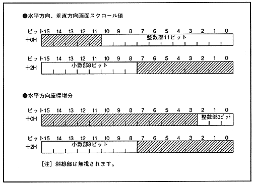

screen scroll value and horizontal coordinate increment is the same as the data configuration set in each register. ∙ The bit configuration of the line scroll table data is shown in Fig. 5.4, and the configuration of the line scroll table is shown in Fig. 5.5.
Figure 5.4 Bit configuration of line scroll table data
